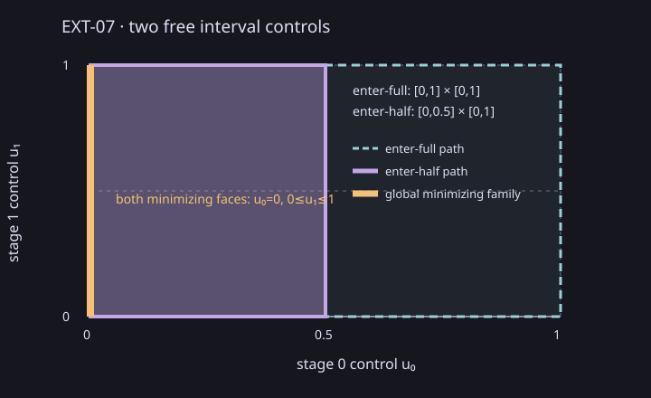

Analytic answer
The enter-half path has feasible controls [0,0.5]×[0,1]; enter-full has [0,1]×[0,1]. Both minimize x_terminal=u₀ at zero, retaining the complete tied families u₀=0, 0≤u₁≤1.
Open the standalone two-control example (includes a labelled plot, fixture, independent answer, and reproduction commands).

Measured execution
One excluded 10-call warmup followed by seven measured batches of 20 calls: 140 measured calls, no failures. Median batch duration is 70,020,515 ns (range 69,853,315–70,733,389 ns); median individual call is 3,497,429 ns. Each end-to-end interval includes fixture/provider setup, complete two-path relation assembly, both HiGHS LP solves, tied-face construction, and verification of both path families. CTest and build time are excluded.
| Batch | Calls | End-to-end total (ns) | Failures |
|---|---|---|---|
| 0 | 20 | 70,733,389 | 0 |
| 1 | 20 | 69,982,314 | 0 |
| 2 | 20 | 69,853,315 | 0 |
| 3 | 20 | 69,859,672 | 0 |
| 4 | 20 | 70,020,515 | 0 |
| 5 | 20 | 70,352,199 | 0 |
| 6 | 20 | 70,055,649 | 0 |
Recorded provider: csl.lp.highs@1.1.0+highs.1.11.0. Verifier: csl.hybrid.exact-linear-h. Outcomes for both branches are feasibility, objective optimality, and continuous coverage established.
Per-branch process CPU sums all process threads. Per-operation CPU is measured on the synchronous composing thread and excludes helper-thread CPU; both scopes and unavailable readings are retained in the raw records.
| Operation | Median CPU (ns) | Observed calls | Unavailable | Unavailable reasons |
|---|---|---|---|---|
| path 0, op 0: initial_state at stage 0 · mode source | 8,561 | 140 | 0 | |
| path 0, op 1: post_state_invariant at stage 0 · mode source | 5,259 | 140 | 0 | |
| path 0, op 2: mode_flow at stage 0 · mode source | 5,685 | 140 | 0 | |
| path 0, op 3: continuous_control at stage 0 · mode source | 6,001 | 140 | 0 | |
| path 0, op 4: pre_reset_invariant at stage 1 · mode source | 6,292 | 140 | 0 | |
| path 0, op 5: transition_guard at stage 0 · edge enter-half | 6,192 | 140 | 0 | |
| path 0, op 6: reset_relation at stage 0 · edge enter-half | 6,306 | 140 | 0 | |
| path 0, op 7: post_state_invariant at stage 1 · mode middle | 6,226 | 140 | 0 | |
| path 0, op 8: mode_flow at stage 1 · mode middle | 6,326 | 140 | 0 | |
| path 0, op 9: continuous_control at stage 1 · mode middle | 4,198 | 140 | 0 | |
| path 0, op 10: pre_reset_invariant at stage 2 · mode middle | 6,387 | 140 | 0 | |
| path 0, op 11: transition_guard at stage 1 · edge finish | 6,371 | 140 | 0 | |
| path 0, op 12: reset_relation at stage 1 · edge finish | 6,352 | 140 | 0 | |
| path 0, op 13: post_state_invariant at stage 2 · mode terminal | 6,362 | 140 | 0 | |
| path 1, op 0: initial_state at stage 0 · mode source | 3,817 | 140 | 0 | |
| path 1, op 1: post_state_invariant at stage 0 · mode source | 6,241 | 140 | 0 | |
| path 1, op 2: mode_flow at stage 0 · mode source | 6,302 | 140 | 0 | |
| path 1, op 3: continuous_control at stage 0 · mode source | 6,276 | 140 | 0 | |
| path 1, op 4: pre_reset_invariant at stage 1 · mode source | 6,342 | 140 | 0 | |
| path 1, op 5: transition_guard at stage 0 · edge enter-full | 6,231 | 140 | 0 | |
| path 1, op 6: reset_relation at stage 0 · edge enter-full | 6,382 | 140 | 0 | |
| path 1, op 7: post_state_invariant at stage 1 · mode middle | 6,282 | 140 | 0 | |
| path 1, op 8: mode_flow at stage 1 · mode middle | 6,377 | 140 | 0 | |
| path 1, op 9: continuous_control at stage 1 · mode middle | 4,308 | 140 | 0 | |
| path 1, op 10: pre_reset_invariant at stage 2 · mode middle | 6,341 | 140 | 0 | |
| path 1, op 11: transition_guard at stage 1 · edge finish | 6,382 | 140 | 0 | |
| path 1, op 12: reset_relation at stage 1 · edge finish | 6,377 | 140 | 0 | |
| path 1, op 13: post_state_invariant at stage 2 · mode terminal | 6,352 | 140 | 0 |
Provider invocation wall time covers synchronous execution. The accompanying process CPU sums all process threads, includes clock sampling, and may include helper threads or unrelated concurrent work; it is not provider-only CPU. Memory remains unmeasured.
| Path | Median invocation wall (ns) | Median invocation process CPU (ns) | Observed calls | CPU unavailable |
|---|---|---|---|---|
| enter-half | 223,912 | 227,797 | 140 | 0 |
| enter-full | 196,883 | 200,856 | 140 | 0 |
Scope and provenance
This is descriptive evidence for one Linux measurement workstation Release host and one analytic fixture. It makes no comparison, speedup, source-mapped bottleneck, or scalability claim. It covers exactly two scalar free controls; larger polytope dimensions and general horizons remain unmeasured. Assurance is numerical binary64, not validated arithmetic.
Source commit: 66653dae21ca2fc28ef3b86b3199d36e4826d5bc. See versioned record, raw per-call timings and batches, smoke record, summary CSV, hash manifest, measured driver, and offline ZIP.